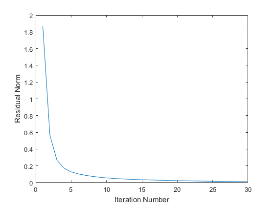

% Argyris Zymnis, Joelle Skaf, Stephen Boyd % % We are given a matrix A in R^{m*n} % and are interested in solving the problem: % % minimize ||A - Y*X||_F % subject to Y >= 0, X >= 0 % % where Y in R{m*k} and X in R{k*n}. % This script generates a random matrix A and obtains an % *approximate* solution to the above problem by first generating % a random initial guess for Y and the alternatively minimizing % over X and Y for a fixed number of iterations. % Generate data matrix A rstate = rand('state'); m = 10; n = 10; k = 5; A = rand(m,k)*rand(k,n); % Initialize Y randomly Y = rand(m,k); % Perform alternating minimization MAX_ITERS = 30; residual = zeros(1,MAX_ITERS); for iter = 1:MAX_ITERS cvx_begin quiet if mod(iter,2) == 1 variable X(k,n) X >= 0; else variable Y(m,k) Y >= 0; end minimize(norm(A - Y*X,'fro')); cvx_end fprintf(1,'Iteration %d, residual norm %g\n',iter,cvx_optval); residual(iter) = cvx_optval; end % Plot residuals plot(residual); xlabel('Iteration Number'); ylabel('Residual Norm'); % Display results disp( 'Original matrix:' ); disp( A ); disp( 'Left factor Y:' ); disp( Y ); disp( 'Right factor X:' ); disp( X ); disp( 'Residual A - Y * X:' ); disp( A - Y * X ); fprintf( 'Residual after %d iterations: %g\n', iter, cvx_optval );
Iteration 1, residual norm 1.86932
Iteration 2, residual norm 0.566995
Iteration 3, residual norm 0.267139
Iteration 4, residual norm 0.171482
Iteration 5, residual norm 0.127535
Iteration 6, residual norm 0.103956
Iteration 7, residual norm 0.0869775
Iteration 8, residual norm 0.0739033
Iteration 9, residual norm 0.0636546
Iteration 10, residual norm 0.0557065
Iteration 11, residual norm 0.0493255
Iteration 12, residual norm 0.0444954
Iteration 13, residual norm 0.0403932
Iteration 14, residual norm 0.0370234
Iteration 15, residual norm 0.0340479
Iteration 16, residual norm 0.0315117
Iteration 17, residual norm 0.0291764
Iteration 18, residual norm 0.0270562
Iteration 19, residual norm 0.0250405
Iteration 20, residual norm 0.0231861
Iteration 21, residual norm 0.0214214
Iteration 22, residual norm 0.0197951
Iteration 23, residual norm 0.0182536
Iteration 24, residual norm 0.0168346
Iteration 25, residual norm 0.0154964
Iteration 26, residual norm 0.0142662
Iteration 27, residual norm 0.0131117
Iteration 28, residual norm 0.0120518
Iteration 29, residual norm 0.0110615
Iteration 30, residual norm 0.0101534
Original matrix:
Columns 1 through 7
0.7559 1.4563 1.7685 1.3074 1.2489 1.5612 1.5327
1.0993 1.4136 1.6149 0.7909 1.1404 1.2832 1.7866
1.3363 2.2560 2.6432 1.4672 1.9134 2.0245 2.2989
1.1626 1.6477 1.8250 1.0968 1.2599 1.6324 1.9835
0.7126 1.6997 1.6962 1.2922 1.3919 1.6250 1.5037
0.7882 1.5156 1.5913 1.1120 1.2737 1.4507 1.5553
1.3521 1.9869 2.3577 1.3465 1.5314 1.9490 2.2293
1.1611 1.5820 2.0198 0.9089 1.2605 1.4140 1.7440
0.6769 1.3164 1.3805 0.9933 1.1803 1.2526 1.4187
1.1486 1.5058 1.7768 0.9874 1.2185 1.4741 1.9368
Columns 8 through 10
1.7439 0.4421 1.6600
1.1989 0.5109 0.6115
1.9421 1.1127 1.7473
1.7748 0.3828 0.9714
1.9775 0.5892 1.5571
1.6453 0.5236 1.2387
2.0155 0.6314 1.4172
1.1955 0.7857 1.0142
1.3869 0.4916 1.1019
1.4569 0.4394 0.8726
Left factor Y:
0.3151 1.4784 0.1993 0.0075 0.4508
0.4093 0.0000 0.2318 0.8815 0.6898
0.8796 0.3457 1.2056 0.2384 0.8180
0.0000 0.9150 0.0161 1.0643 0.6823
0.1524 1.1798 0.9623 0.4621 0.0139
0.3667 0.7515 0.6393 0.5431 0.1752
0.0479 1.1503 0.2234 0.6892 1.0415
0.4181 0.1383 0.5288 0.1823 1.0947
0.6381 0.4329 0.6134 0.4620 0.0343
0.3564 0.4828 0.0000 0.8470 0.7496
Right factor X:
Columns 1 through 7
0.3430 0.5360 0.7209 0.5724 0.6606 0.5925 0.8630
0.1859 0.5498 0.6173 0.6174 0.4752 0.6616 0.5307
0.2239 0.7102 0.6510 0.3502 0.5381 0.5132 0.3603
0.4667 0.5971 0.4681 0.2924 0.4453 0.5439 0.8379
0.7202 0.7284 1.0995 0.3160 0.5051 0.6434 0.8829
Columns 8 through 10
0.5220 0.2236 0.6670
0.8670 0.0690 0.8134
0.5860 0.4660 0.5107
0.6618 0.0429 0.0000
0.3900 0.3914 0.3222
Residual A - Y * X:
Columns 1 through 7
0.0002 0.0001 -0.0002 -0.0003 -0.0001 -0.0001 0.0001
-0.0012 0.0008 -0.0021 -0.0003 0.0043 -0.0016 0.0022
0.0001 0.0000 -0.0001 -0.0001 -0.0000 -0.0000 0.0000
0.0008 0.0007 0.0013 -0.0007 -0.0022 0.0008 -0.0020
-0.0001 -0.0000 0.0001 0.0001 0.0000 0.0000 -0.0000
-0.0001 -0.0000 0.0001 0.0001 0.0000 0.0000 -0.0000
0.0000 0.0000 -0.0000 -0.0000 -0.0000 -0.0000 0.0000
0.0001 0.0001 -0.0001 -0.0002 -0.0000 -0.0000 0.0001
-0.0001 -0.0000 0.0001 0.0001 0.0000 0.0000 -0.0000
0.0014 -0.0024 0.0012 0.0008 -0.0021 0.0004 0.0015
Columns 8 through 10
0.0000 -0.0000 0.0002
-0.0029 0.0035 -0.0022
0.0000 -0.0000 0.0001
0.0016 -0.0006 -0.0009
-0.0000 0.0000 -0.0001
-0.0000 0.0000 -0.0001
0.0000 -0.0000 0.0000
0.0000 -0.0000 0.0001
-0.0000 0.0000 -0.0001
-0.0006 -0.0033 0.0006
Residual after 30 iterations: 0.0101534
